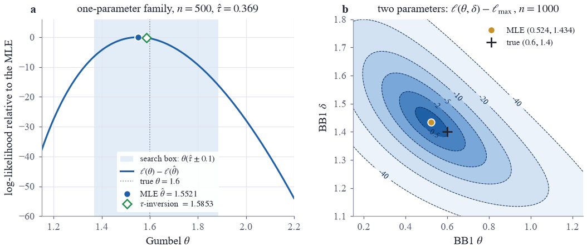
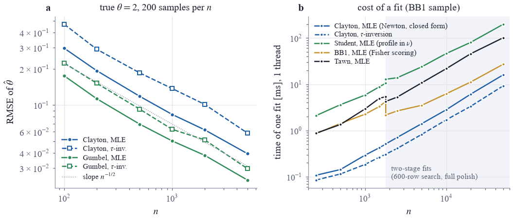
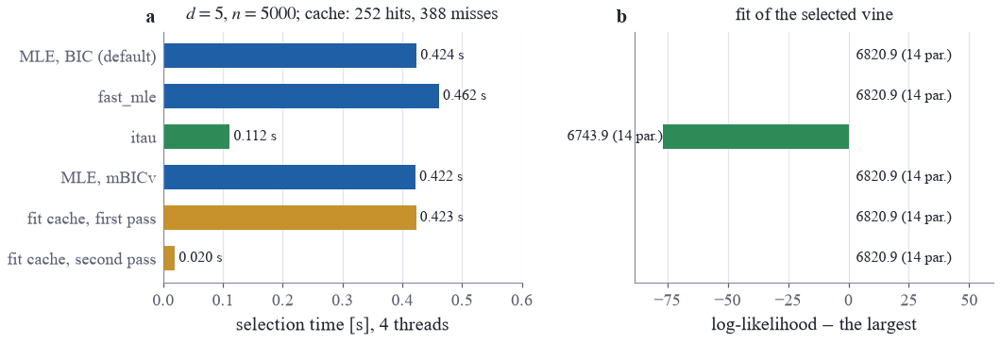

Fitting and selection¶
This page describes what happens when fortvine fits a pair copula, how it chooses among
candidate families, and which shortcuts keep vine selection fast without changing its
result. The knobs are fields of fv_controls; the code lives in
src/fortvine.f90 (fit_one_raw, newton_fit, edge_cands, vine_select_x).
The life of one candidate¶
Every candidate (family, rotation) for a pair goes through the same steps:
- Rotate the data so that the unrotated family can be used, and compute Kendall's \(\tau\) of the rotated pair.
- Specify the fit: method (MLE, evaluation at the \(\tau\)-inversion, nonparametric estimate), start value and parameter box.
- Optimise the log-likelihood in the box.
- Score the result with the selection criterion.
Steps 3 and 4 dominate the cost; most of this page is about doing them with as few passes over the data as possible.
Start values and search boxes¶
| family | start | box |
|---|---|---|
| Gaussian, Clayton, Gumbel, Frank, Joe | \(\tau\)-inversion of the winsorised \(\tau\) (\(0.01 \le \lvert\tau\rvert \le 0.9\)) | parameters of \(\tau \pm 0.1\), intersected with the full box |
| Student | \(\rho = \sin(\pi\tau/2)\) | \(\rho\) from \(\tau \pm 0.1\); \(\nu \in [2.01, 30]\) |
| BB1, BB6, BB7, BB8 | lower bounds + 0.1, then a \(3^k\) grid | full box |
| Tawn | \((0.5, 0.5, 1 + 6\lvert\tau\rvert)\) | \([0.3, 1] \times [0.3, 1] \times [1.5, 7]\) |
| Plackett ... t-EV (12-23) | centre of the box, then a family-specific grid | full box |
| generic (\(\ge 10000\)) | grid ranked by Blomqvist's \(\beta\) | full box |
The narrowed boxes of the one-parameter families, the Student and Tawn reproduce
vinecopulib's adjust_parameters_bounds; they make the optimisation cheap and are almost
never binding because the MLE of these families is close to the \(\tau\)-inversion. The full
boxes are listed in Pair copulas.

One-parameter families in closed form¶
For the Gaussian, Clayton, Gumbel, Frank and Joe families on continuous margins fortvine writes the log-density, its first two derivatives in the parameter, both h-functions and the CDF in closed form. One pass over the data then gives log-likelihood, score and curvature.
- Gaussian. The score equation is a cubic in \(\rho\), \(W\rho^3 - B\rho^2 + (A - W)\rho - B = 0\) with \(W = \sum w_i\), \(A = \sum w_i (x_i^2 + y_i^2)\), \(B = \sum w_i x_i y_i\) of the normal scores; its real roots in the box (and the box ends) are compared, so the MLE is exact.
- Clayton, Gumbel, Frank, Joe. Newton's method from the \(\tau\)-inversion. Because that start is already \(\sqrt{n}\)-consistent, the first step is Le Cam's one-step estimator and the iteration usually stops after two passes, when the quadratic model predicts a remaining gain below \(10^{-6}\) log-likelihood units. Steps that lower the likelihood are halved.
The same closed forms are used for pairs with discrete margins (see Discrete data).
Multi-parameter families: Fisher scoring with exact scores¶
All other parametric families are fitted by a projected Newton-type method on the log-likelihood \(\ell(\theta) = \sum_i w_i \log c(u_{i1}, u_{i2}; \theta)\):
- Exact scores. \(\partial \log c / \partial\theta\) is obtained by evaluating the
log-density in forward-mode dual numbers (
src/fortvine_ad.f90): the family formulas are compiled once for real numbers and once for duals with 1, 2 or 3 derivative slots, so the scores are exact to rounding, with no finite differences. See Exact parameter scores. - Curvature. The BHHH approximation \(-\sum_i w_i\, s_i s_i^\top\) (outer product of the per-observation scores \(s_i\)) replaces the Hessian. It is positive definite near the optimum and costs nothing beyond the scores.
- Steps. A Levenberg-Marquardt damping factor is raised when a trial step lowers the likelihood (by interpolating the step length at which the quadratic model peaks) and lowered after each accepted step. Parameters at an active bound with the score pointing outwards are frozen for that step.
- Ridges. Where BHHH alone would zig-zag (t-EV's \((\rho, \log\nu)\) ridge, and the final polish of every family), the curvature model is updated by BFGS from the exact score changes. A step sequence that shrinks geometrically in one direction is extrapolated to its limit (Aitken), kept only if it improves the likelihood.
- Scale. For BB8, Husler-Reiss, BB2, BB9 and BB10, a positive parameter whose box spans at least two decades is optimised as \(\log\theta\).
- Stopping. The iteration ends when the predicted gain \(\tfrac12 g^\top s\) and the actual change are both below a relative tolerance (\(10^{-8}\) for the final fit), or when the step no longer moves the parameters.
The Student copula is handled separately: for fixed \(\nu\) the score in \(\rho\) is analytic and solved by Newton's method, and \(\nu\) is found by Brent's one-dimensional minimisation of the profile likelihood. t-EV starts with a Brent profile in \(\log\nu\) and finishes with a joint Newton fit in \((\rho, \log\nu)\) using the exact \(\nu\)-score of the \(t\) distribution function.
If Newton's method cannot start at all (a non-finite likelihood at every start), a Nelder-Mead search in logit-transformed box coordinates is used as a fallback.
Two-stage fitting for large samples¶
For \(n > 1800\) every multi-parameter fit runs in two stages:
- Search on a subsample. A deterministic stride subsample of about 600 observations (every \(\lfloor n/600 \rfloor\)-th row) is used for the start grid and for Newton iterations with a loose tolerance (\(10^{-4}\)).
- Polish on all data. Starting from the subsample optimum, the full-data Newton iteration with the normal stopping rule takes typically one to three passes.
The stopping rule of stage 2 is the full-data one, so the result is still the full-data MLE; the subsample only provides a good start.

Multi-start grids¶
Some likelihoods are multimodal or have long ridges (BB5 can drift towards its Gumbel limit, BB9 has a ridge in \(\delta\)). For BB5, BB9 and all generic families, Newton's method is started from the three best points of the start grid; distinct optima (relative distance above 5 %) are kept, and every optimum within 2 log-likelihood units of the best one on the subsample is polished on all data. Other families use a single start, which reproduces vinecopulib's optima.
The grids are value-only likelihood evaluations:
- BB1, BB6, BB7, BB8: \(3^k\) points at logistic positions \(-2, 0, 2\) of the box;
- Plackett ... t-EV: a short hand-chosen list per parameter (log-spaced for scale parameters);
- generic families: four values per parameter (\(4^k\) points), log-spaced in wide positive boxes and linear in unit boxes. The points are ranked by the distance of their Blomqvist \(\beta = 4C(\tfrac12,\tfrac12) - 1\) to the empirical \(\beta\) (one closed-form \(C\) value per point, no likelihood pass), and only the three closest are scored by the likelihood.
Preselection by tail asymmetry¶
With ctl%preselect = .true. (default), candidates are filtered before any fit, following
vinecopulib's preselect_family. On the normal scores \(z_1, z_2\) of the pair two correlations
are computed: \(c_1\) among the points in the upper-right quadrant and \(c_2\) among those in the
lower-left quadrant (for \(\tau < 0\): upper-left and lower-right). Then:
- Frank is dropped if \(\lvert c_1 - c_2\rvert > 0.3\) (strong tail asymmetry);
- if \(c_1 - c_2 > 0.05\) (more dependence in the upper corner), a rotatable family is kept only in the rotations that put its tail dependence there;
- if \(c_1 - c_2 < -0.05\), symmetrically for the lower corner;
- otherwise every rotation matching the sign of \(\tau\) is kept.
The BB families and the generic families are always kept in the rotations matching the sign
of \(\tau\). Which families count as "lower tail" or "upper tail" is fixed per hand-coded
family; for the generic engine it is derived from the code (gen_lt, gen_ut).
Racing: screen, then polish¶
Selecting among many candidates spends most of its time polishing candidates that will lose. fortvine therefore races them:
- Cheap first. In vine selection, the closed-form and one-parameter fits of every edge are scheduled first, so each edge has a best score within milliseconds; the remaining jobs are scheduled longest-first.
- Screen. A two-stage fit stops at its subsample optimum and computes the exact full-data log-likelihood \(\ell_s\) there, together with an upper bound for what the polish could still gain: \(\ell_s + \max(10 d,\; d + 0.08\lvert\ell_s\rvert + 5)\), where \(d\) is the Fisher-scoring predicted gain of one full step (for the Student \(\ell_s + 0.15\lvert\ell_s\rvert + 5\)).
- Polish or discard. The candidate is polished only if the criterion value of its bound can still beat the best score achieved so far on that edge. During the polish, the bound is re-evaluated each step, and the fit gives up as soon as it can no longer reach the target.
The bounds are empirical. The screen bound was calibrated on 23 true families \(\times\) 25 candidates \(\times\) both rotations at \(n = 5000\), where no polish gained within 11 log-likelihood units of it; the give-up bound of the polish on about 2300 traced polishes with \(n\) between 1500 and 30000. Since the best score only increases and never exceeds the final best, the selected candidate is always polished to the end; as long as the bound holds, the selection result is the same as without racing.
Generic-family pre-screen in vine selection¶
The 85 generic families make the family set several times larger. When the sample has more than 1800 rows and the family set contains generic codes, each generic candidate of an edge is first fitted on the ~600-row subsample only (Blomqvist start, one Newton fit, tolerance \(10^{-3}\)); its log-likelihood is scaled by \(n/600\) and scored with the selection criterion. Only the four best generic candidates per edge go on to the full-data racing. The hand-coded candidates are never pre-screened, and discrete edges skip this step.
Fit cache¶
Repeated selections on the same data (tuning loops, bootstrap over options, thresholding passes) refit many identical pairs. The fit cache stores the result of each pair fit under a 64-bit key built from every bit of the pair data, the weights, the \(F(x^-)\) values of discrete margins, the family, rotation, method, start and box:
- A hit returns exactly the fit computed earlier for identical input, so results do not change.
- The table is open-addressed (16 probes); when full, the colliding slot is overwritten.
- Racing screens are cached under their own key, so a repeated selection reproduces them too.
- The cache is shared by all threads (guarded by an OpenMP critical section) and by every
fitandselectcall while it is enabled.fv_fitcache_clear()empties it,fv_fitcache_capacity()returns its size (0 when disabled). - One-parameter fits inside vine selection bypass the cache (they are cheaper than a lookup);
fv_bicop%fitcaches them.
vc%select with ctl%select_threshold enables a temporary cache for its passes if none is
active.
Selection criteria¶
For a fitted candidate with log-likelihood \(\ell\), \(k\) parameters (effective degrees of freedom for TLL and Bernstein) and \(n\) observations, fortvine maximises
ctl%selcrit |
score |
|---|---|
FV_LOGLIK |
\(\ell\) |
FV_AIC |
\(\ell - k\) (that is, \(-\text{AIC}/2\)) |
FV_BIC (default) |
\(\ell - \tfrac12 k \log n\) (\(-\text{BIC}/2\)) |
FV_MBIC |
\(\ell - \tfrac12 k\log n + \log\psi_0\) for a dependent candidate, \(\ell + \log(1-\psi_0)\) for independence |
FV_MBICV |
as FV_MBIC with \(\psi = \psi_0^{\,t}\) in tree \(t\) of a vine |
\(\psi_0\) is ctl%psi0 (default 0.9). The modified BIC puts a prior probability \(\psi\) on an
edge being dependent; in its vine version (mBICv, Nagler et al. 2019) that probability
decreases geometrically with the tree level, which favours sparse vines in high dimensions. For
a whole vine with \(q_t\) non-independence edges in tree \(t\),
which is the quantity minimised by select_trunc and select_threshold.
Kendall's tau inversion¶
For the families with a known relation between Kendall's \(\tau\) and the parameter, the parameter can be set from the sample \(\tau\) instead of maximising the likelihood:
| family | inversion |
|---|---|
| Gaussian, Student | \(\rho = \sin(\pi\tau/2)\) (Student: \(\nu\) by MLE with \(\rho\) fixed) |
| Clayton | \(\theta = 2\lvert\tau\rvert / (1 - \lvert\tau\rvert)\) |
| Gumbel | \(\theta = 1 / (1 - \lvert\tau\rvert)\) |
| Frank | numerical inversion of \(\tau(\theta) = 1 - \tfrac{4}{\theta}\big(1 - D_1(\theta)\big)\), \(D_1\) the Debye function |
| Joe | numerical inversion of \(\tau(\theta) = 1 + 2\,\dfrac{\psi(2) - \psi(2/\theta + 1)}{2 - \theta}\), \(\psi\) the digamma function |
The numerical inversions use Newton's method with the analytic \(d\tau/d\theta\) inside a bracket. Two controls use them:
ctl%method = FV_ITAU(method="itau"in Python,par_method = "itau"in R): every candidate is fitted by inversion; families without an inversion (codes above 6) are not considered in selection. The log-likelihood is evaluated at the inverted parameter so that criteria remain comparable.ctl%fast_mle = .true.(withFV_MLE;fast_mle=Truein Python,fast_mle = TRUEin R): only the five one-parameter families above use the inversion; everything else, including the Student, is fitted by MLE. Since the closed-form MLE of those families is already cheap, the saving is small in fortvine.
ctl%tau_mode decides how \(\tau\) itself is computed: FV_TAU_EXACT (default) is the
tie-corrected \(\tau_b\) in \(O(n\log n)\) (Knight 1966); FV_TAU_APPROX uses
\(\tfrac2\pi\arcsin\) of the Pearson correlation of the normal scores; FV_TAU_AUTO uses the
exact value below 800 observations and the approximation above. With weights the weighted
\(\tau_b\) is always used. In tree 1 of an unweighted vine selection with a free structure and
the \(\tau\) tree criterion, the exact \(\tau\) matrix computed for the tree weights is reused.
Example: what the options cost¶
program fitting_demo
use fortvine_api
use iso_fortran_env, only: int64
implicit none
integer, parameter :: dp = kind(1.0d0), n = 5000, d = 5
type(fv_vinecop) :: truth, vc
type(fv_controls) :: ctl
real(dp) :: u(n, d)
integer(int64) :: hits, misses, t0, t1, rate
integer :: e, used
call truth%set_dvine([1, 2, 3, 4, 5])
do e = 1, d - 1
truth%fam(e, 1) = FV_BB1; truth%par(1:2, e, 1) = [0.6_dp, 1.4_dp]
end do
truth%fam(1:d - 2, 2) = FV_STUDENT; truth%par(1, 1:d - 2, 2) = 0.3_dp; truth%par(2, 1:d - 2, 2) = 5.0_dp
call truth%simulate(n, u, seed=5)
ctl%nthreads = 4
call run('MLE, BIC (default)')
ctl%fast_mle = .true.; call run('fast_mle')
ctl%fast_mle = .false.; ctl%method = FV_ITAU; call run('itau')
ctl%method = FV_MLE; ctl%selcrit = FV_MBICV; call run('MLE, mBICv')
! the fit cache: a repeated selection on identical data reuses every cached pair fit
ctl%selcrit = FV_BIC
call fv_fitcache_enable(20000)
call run('cache, first pass')
call run('cache, second pass')
call fv_fitcache_stats(hits, misses, used)
print '(a,i0,a,i0,a,i0)', 'cache hits ', hits, ' misses ', misses, ' slots used ', used
call fv_fitcache_disable()
contains
subroutine run(label)
character(*), intent(in) :: label
call system_clock(t0, rate)
call vc%select(u, ctl, fixed=.false.)
call system_clock(t1)
print '(a20,a,f10.2,a,i3,a,f7.3,a)', label, ' loglik', vc%loglik(u), ' npars', vc%npars(), &
' time', real(t1 - t0, dp) / rate, ' s'
end subroutine run
end program fitting_demo
import time
import fortvine as fv
n, d = 5000, 5
truth = fv.Vinecop().set_dvine([1, 2, 3, 4, 5])
for e in range(d - 1):
truth.set_pair_copula(0, e, fv.Bicop("bb1", 0, [0.6, 1.4]))
for e in range(d - 2):
truth.set_pair_copula(1, e, fv.Bicop("student", 0, [0.3, 5.0]))
u = truth.simulate(n, seed=5)
def run(label, **options):
t0 = time.perf_counter()
vc = fv.Vinecop.from_data(u, num_threads=4, **options)
t1 = time.perf_counter()
print(f"{label:>20s} loglik{vc.loglik(u):10.2f} npars{vc.npars:3d} time{t1 - t0:7.3f} s")
run("MLE, BIC (default)")
run("fast_mle", fast_mle=True)
run("itau", method="itau")
run("MLE, mBICv", criterion="mbicv")
# the fit cache: a repeated selection on identical data reuses every cached pair fit
fv.fitcache_enable(20000)
run("cache, first pass")
run("cache, second pass")
s = fv.fitcache_stats()
print(f"cache hits {s.hits} misses {s.misses} slots used {s.used}")
fv.fitcache_disable()
library(fortvine)
n <- 5000; d <- 5
pcs <- list(rep(list(bicop_dist("bb1", 0, c(0.6, 1.4))), d - 1),
rep(list(bicop_dist("student", 0, c(0.3, 5))), d - 2))
truth <- vinecop_dist(pcs, dvine_structure(1:d))
set.seed(5)
u <- rvinecop(n, truth)
run <- function(label, ...) {
t <- system.time(vc <- vinecop(u, cores = 4, ...))[["elapsed"]]
cat(sprintf("%20s loglik%10.2f npars%3d time%7.3f s\n", label, logLik(vc), vc$npars, t))
}
run("MLE, BIC (default)")
run("fast_mle", fast_mle = TRUE)
run("itau", par_method = "itau")
run("MLE, mBICv", selcrit = "mbicv")
# the fit cache: a repeated selection on identical data reuses every cached pair fit
fitcache_enable(20000)
run("cache, first pass")
run("cache, second pass")
s <- fitcache_stats()
cat(sprintf("cache hits %.0f misses %.0f slots used %.0f\n", s[["hits"]], s[["misses"]], s[["used"]]))
fitcache_disable()
Output (4 threads; timings depend on the machine):
MLE, BIC (default) loglik 6733.94 npars 14 time 0.381 s
fast_mle loglik 6733.94 npars 14 time 0.376 s
itau loglik 6641.74 npars 14 time 0.104 s
MLE, mBICv loglik 6733.94 npars 14 time 0.372 s
cache, first pass loglik 6733.94 npars 14 time 0.372 s
cache, second pass loglik 6733.94 npars 14 time 0.021 s
cache hits 260 misses 402 slots used 350
MLE, BIC (default) loglik 6820.85 npars 14 time 0.428 s
fast_mle loglik 6820.85 npars 14 time 0.419 s
itau loglik 6743.91 npars 14 time 0.107 s
MLE, mBICv loglik 6820.85 npars 14 time 0.422 s
cache, first pass loglik 6820.85 npars 14 time 0.424 s
cache, second pass loglik 6820.85 npars 14 time 0.021 s
cache hits 252 misses 388 slots used 372
MLE, BIC (default) loglik 7099.77 npars 14 time 1.070 s
fast_mle loglik 7099.77 npars 14 time 1.050 s
itau loglik 7019.80 npars 14 time 0.230 s
MLE, mBICv loglik 7099.77 npars 14 time 1.070 s
cache, first pass loglik 7099.77 npars 14 time 1.060 s
cache, second pass loglik 7099.77 npars 14 time 0.060 s
cache hits 268 misses 391 slots used 355
The Python and R samples come from other random streams, so their log-likelihoods differ from the Fortran ones; the pattern is the same. The R package is compiled by R's own toolchain (on Windows Rtools43, gfortran 12.3), which makes the same code two to three times slower here; see Benchmarks.
FV_ITAU is fastest because it drops every family above code 6 (here the true BB1 is no
longer available, which costs about 92 log-likelihood units). The second cached selection
takes 6 % of the time of the first and returns the same vine. It needs fewer lookups (260
hits) than the first pass had misses (402), because a candidate that was screened and then
polished in the first pass costs two fits there but is found at once under its final key.

Aborting a running fit¶
The kernel module exposes a volatile logical fv_abort (in module fortvine, not
re-exported by fortvine_api). Setting it to .true. from another thread makes fits in
flight stop at their next Newton step and new ones return immediately; the results are then
meaningless and are not cached. Reset it to .false. before the next call.
In Python, fv.set_abort(True) / fv.set_abort(False) set and clear the flag (through
fvc_set_abort), and Ctrl-C interrupts a running vine selection or relax (see the
Python page). R has no abort function: R cannot
run code while a computation is in progress.